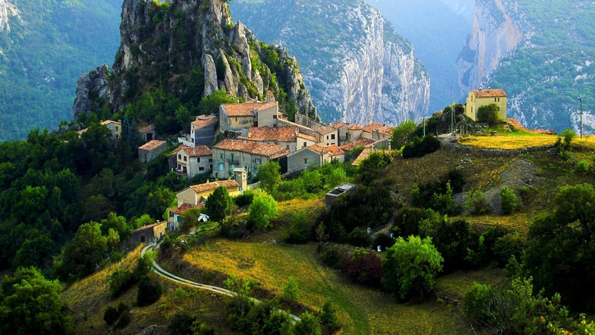

Kedarnath Temple
Kedarnath Temple, nestled in the Garhwal Himalayas, is one of the Char Dham pilgrimage sites. Explore the ancient temple dedicated to Lord Shiva and the breathtaking natural surroundings.


Kedarnath Temple, nestled in the Garhwal Himalayas, is one of the Char Dham pilgrimage sites. Explore the ancient temple dedicated to Lord Shiva and the breathtaking natural surroundings.
Badrinath Temple, located in the town of Badrinath, is another Char Dham pilgrimage site. Discover the sacred shrine dedicated to Lord Vishnu and the picturesque landscapes of the Himalayas.


Ranikhet, a hill station in Uttarakhand, has a rich colonial history. Explore the old churches, lush forests, and enjoy panoramic views of the snow-capped peaks in this charming town.
